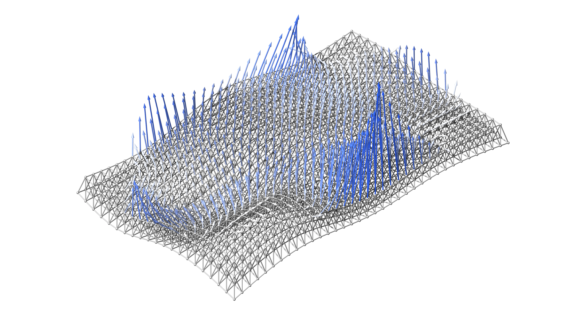

AsapOptim.jl

High-performance, general structural optimization in the Asap.jl environment.
AsapOptim maps a design vector to a differentiable structural analysis and back. The vector holds node positions, cross-section properties, connection stiffnesses and force densities. You write ordinary Julia objective and constraint functions. Gradients flow end-to-end through the solve by automatic differentiation, and any gradient-based optimizer (Nonconvex.jl, NLopt, Optim, your own loop) drives the design.
AsapOptim is a thin layer over Asap's differentiable core. It compiles design variables into sparse scatter maps and evaluates designs through Asap's pure, AD-transparent solve path. It re-implements no analysis and contains no hand-written adjoints. One unified core handles trusses, frames, semi-rigid joints, element loads and mixed models.
Installation
pkg> add AsapOptimFor the examples you will also want an AD engine and an optimizer:
pkg> add Zygote Nonconvex NonconvexNLoptThe workflow
Every optimization follows the same five steps:
- Model: build and solve an
Asap.Modelas usual. - Variables: declare what the optimizer controls (Design variables).
- Parameters: compile the model and variables into an
OptParams, once. - Objective and constraints: plain functions of
solve_structure(x, params)results, or ofGeometricProperties(x, params)when no solve is needed. - Optimize: hand the functions and
params.lb/params.ubto your optimizer, then recover the final design withupdatemodel(params, x_optimal).
using Asap, AsapOptim
using Zygote # activates Asap's ChainRules extension
vars = AbstractVariable[ ... ] # step 2
params = OptParams(model, vars) # step 3
x0 = copy(params.values)
objective(x) = compliance(solve_structure(x, params), params) # step 4
value, gradient = Zygote.withgradient(objective, x0) # step 5: any gradient-based optimizer from hereStart with the Quick start.
Package overview
AsapOptim — Module
AsapOptimStructural optimization on top of Asap's differentiable core.
The v1.0 rewrite: Asap itself now provides the pure, AD-transparent assembly/solve path (ModelState → Asap.solve), so this package no longer re-implements analysis or hand-writes adjoints — it is a thin, Zygote-free layer that maps a design vector to a ModelState and back:
- design variables (
SpatialVariable,AreaVariable,CoupledVariable) declare what the optimizer controls OptParamscompiles them into sparse scatter mapssolve_structure(aliasessolve_truss/solve_frame) evaluates a design: positions/sections → pure solve →OptResultsaxial_force/axial_stress/complianceare pure functions of the results, differentiable end-to-endGeometricPropertiesgives geometry-only quantities (lengths, areas) without a solveupdatemodelmaterializes an optimal design back into a solvedAsap.Model
Bring your own AD engine and optimizer: loading Zygote (or anything using ChainRulesCore) activates Asap's rule extension automatically.
The force-density Network optimization path (QVariable → NetworkOptParams → solve_network) rides the same pure machinery.